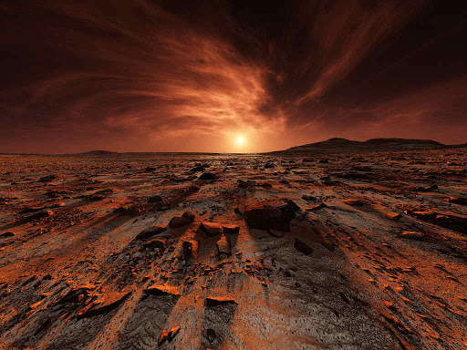
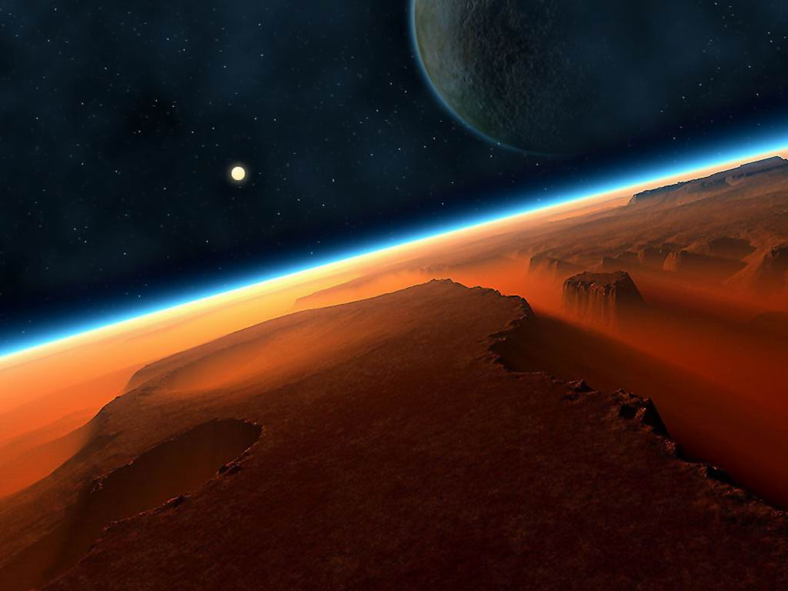
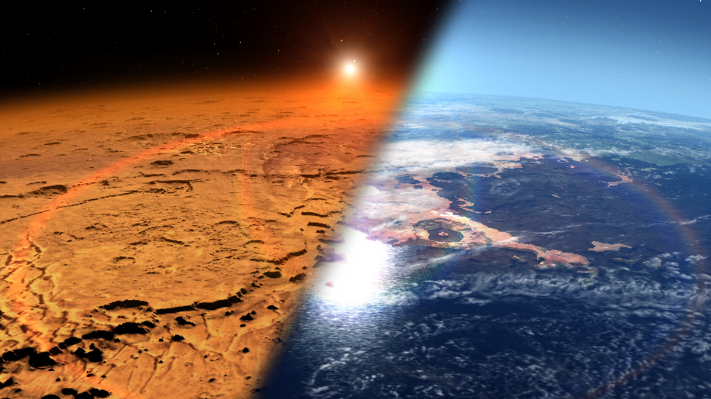
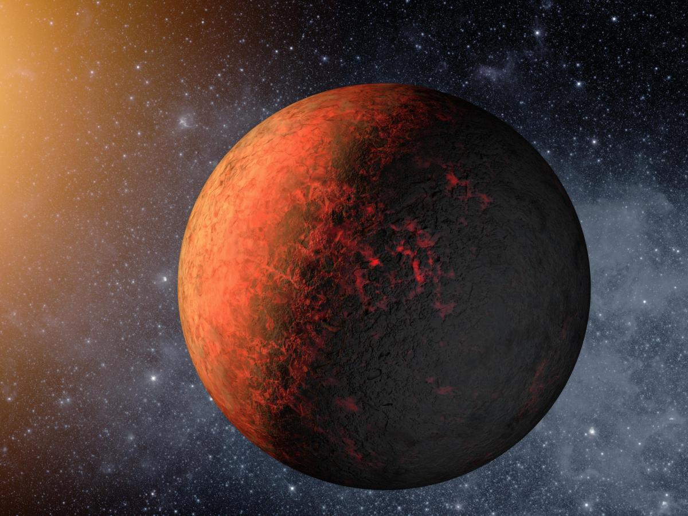
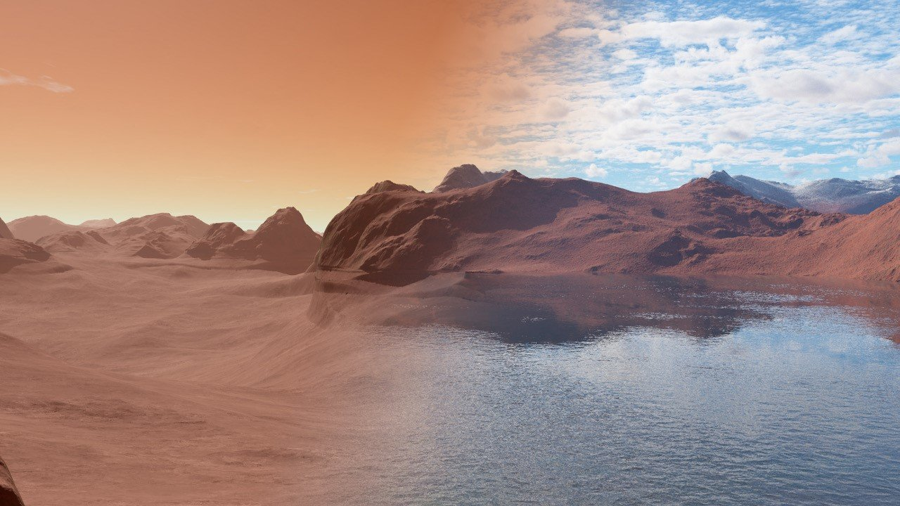

Марс расположен между Землёй и Юпитером, является седьмой по величине планетой в Солнечной системе и четвёртой по счёту от Солнца. Красная планета меньше нашей Земли в два раза: её радиус на экваторе составляет почти 3,4 тыс. км (экваториальный радиус Марса на двадцать километров больше полярного).
От Юпитера, который является пятой по счёту планетой от Солнца, Марс расположен на расстоянии от 486 до 612 млн. км. Земля находится значительно ближе: наименьшее расстояние между планетами – 56 млн. км, наибольшее расстояние – около 400 млн., км.
Не удивительно, что Марс на земном небосводе очень хорошо различим. Ярче его лишь Юпитер и Венера, и то не всегда: раз в пятнадцать-семнадцать лет, когда красная планета приближается к Земле на минимальное расстояние, на протяжении полумесяца Марс – самый яркий объект на небосводе.

Рельеф
×
В прежние времена на Марсе происходило движение литосферных плит, что вызвало поднятие и падение марсианской коры (тектонические плиты движутся и сейчас, но уже не так активно). Рельеф примечателен тем, что несмотря на то, что Марс является одной из самых малых планет, здесь расположено немало крупнейших объектов Солнечной системы.
Здесь находится самая высокая гора из обнаруженных на планетах Солнечной системы – недействующий вулкан Олимп: его высота от основания составляет 21,2 км. Если посмотреть на карту, можно увидеть, что гору окружает огромное количество небольших возвышенностей и хребтов.
На красной планете расположена крупнейшая система каньонов, известная под названием долина Маринер: на карте Марса их протяжённость составляет около 4,5 тыс. км, ширина – 200 км, глубина –11 км.
В северном полушарии планеты находится наибольший ударный кратер: его диаметр около 10,5 тыс. км, ширина – 8,5 тыс. км.
Разница в рельефе между полушариями являет неплавный переход, а представляет собой широкую границу вдоль всей окружности планеты, что расположена не по экватору, а в тридцати градусах от него, формируя склон в северном направлении (вдоль этой границы находится больше всего подвергнувшихся эрозии участков).

Атмосфера
×
Толщина атмосферного слоя планеты составляет 110 км, и почти на 96% он состоит из углекислого газа (кислорода лишь 0,13%, азота – несколько больше: 2,7%) и очень разряжена: давление атмосферы красной планеты в 160 раз меньше, чем у Земли, при этом из-за большого перепада высот оно сильно колеблется.
Поверхность Марса очень плохо защищена от вторжения извне небесных объектов и волн. По одной из гипотез, после столкновения на раннем этапе своего существования с крупным объектом удар был такой силы, что вращение ядра приостановилось, а планета потеряла большую часть атмосферы и магнитного поля, которые являлись щитом, защищая её от вторжения небесных тел и солнечного ветра, что несёт с собой радиацию.
Поэтому, когда Солнце показывается или уходит за горизонт, небо Марса красновато-розового цвета, а возле солнечного диска заметен переход от голубого к фиолетовому. Днём небосвод окрашивается в желто-оранжевый цвет, который придаёт ему летающая в разряженной атмосфере красноватая пыль планеты.
В ночную пору самым ярким объектом на небосводе Марса является Венера, за ней – Юпитер со спутниками, на третьем месте – Земля (поскольку наша планета расположена ближе к Солнцу, для Марса она является внутренней, поэтому видна только утром или вечером).

Климат
×
Красная планета вращается вокруг своей оси под углом 25,29 градуса. Благодаря этому солнечные сутки здесь составляют 24 ч. 39 мин. 35 сек., тогда как год на планете бога Марса из-за вытянутости орбиты длится 686,9 дней.
Четвёртая по порядку планета Солнечной системы имеет времена года. Правда, летняя погода в северном полушарии холодная: лето начинается тогда, когда планета максимально удалена от звезды. Зато на юге оно жаркое и короткое: в это время Марс максимально близко приближается к звезде.
Для Марса характерно наличие холодной погоды. Средние температурные показатели планеты составляют −50 °C: зимой температура на полюсе составляет −153°C, тогда как на экваторе летом – немногим более +22 °C.
Немаловажную роль в распределении температуры на Марсе играют многочисленные пылевые бури, начинающиеся после таяния льдов. В это время атмосферное давление быстро повышается, в результате чего большие массы газа начинают двигаться к соседнему полушарию на скорости от 10 до 100 м/с. При этом с поверхности поднимается огромное количество пыли, что полностью скрывает рельеф (не просматривается даже вулкан Олимп).

Тёмные и светлые участки
×
Несмотря на отсутствие морей и океанов, закреплённые за светлыми и темными участками названия остались. Если посмотреть на карту, можно заметить, что моря по большей части находятся в южном полушарии, они хорошо просматриваются и неплохо изучены.
А вот что являют собой затемнённые участки на карте Марса – эта загадка не разгадана до сих пор. До появления космических аппаратов, считалось, что темные участки покрывает растительность. Сейчас стало очевидно, что в местах, где находятся тёмные полосы и пятна, поверхность состоит из холмов, гор, кратеров, со столкновениями которых воздушные массы, выдувают пыль. Поэтому изменение размеров и форм пятен связано с движением пыли, обладающей светлым или тёмным светом.

Вода
×
До середины прошлого века учёные считали, что на Марсе можно найти воду в жидком состоянии, и это давало повод говорить, что жизнь на красной планете существует. Эта теория была основана на том факте, что на планете совершенно чётко просматривались светлые и тёмные участки, которые очень напоминали моря и материки, а тёмные длинные линии на карте планеты походили на долины рек.
Но, после первого же полёта к Марсу, стало очевидно, что вода из-за слишком низкого атмосферного давления в жидком состоянии на семидесяти процентах планеты находиться не может. Выдвигается предположение, что она всё же была: об этом факте свидетельствуют найденные микроскопические частички минерала гематита и других минералов, которые обычно формируются лишь в осадочных породах и явно поддавались воздействию воды.
О том, что это вода, свидетельствует тот факт, что полосы не идут поверх препятствия, а как бы обтекают их, иногда при этом расходятся, а затем вновь сливаются (они очень хорошо заметны на карте планеты). Некоторые особенности рельефа говорят о том, что русла рек во время постепенного поднятия поверхности смещались и продолжали течь в удобном для них направлении.
Ещё одним интересным фактом, свидетельствующим о наличии воды в атмосфере, являются густые облака, появление которых связывают с тем, что неровный рельеф планеты направляет воздушные массы вверх, где они остывают, а находящийся в них водяной пар конденсируется в ледяные кристаллы.
Появляются облака над каньонами Маринера на высоте около 50 км, когда Марс находится в точке перигелия. Движущиеся с востока воздушные потоки растягивают облака на несколько сотен километров, в то же время ширина их составляет несколько десятков.
Существует ли жизнь на Марсе
Вопрос о существовании жизни на красной планете стал особо популярен после публикации романа Уэльса «Война миров», по сюжету которого наша планета оказалась захвачена гуманоидами, и землянам лишь чудом удалось выжить. С тех пор тайны планеты, расположенной между Землёй и Юпитером, интригуют вот уже не одно поколение, а описанием Марса и его спутниками интересуется всё больше людей.
Если смотреть на карту Солнечной системы, становится очевидно, что Марс находится от нас на небольшом расстоянии, следовательно, если жизнь могла возникнуть на Земле, то она вполне могла бы появиться и на Марсе.
Интригу подогревают и учёные, которые сообщают о наличии воды на планете земной группы, а также подходящих для развития жизни условий в составе грунта. Кроме того, в интернете и специализированных журналах нередко публикуют снимки, на которых камни, тени и другие изображённые на них предметы сравнивают со зданиями, памятниками и даже остатками хорошо сохранившихся представителей местной флоры и фауны, стремясь доказать существование жизни на этой планеты и разгадать все тайны Марса.